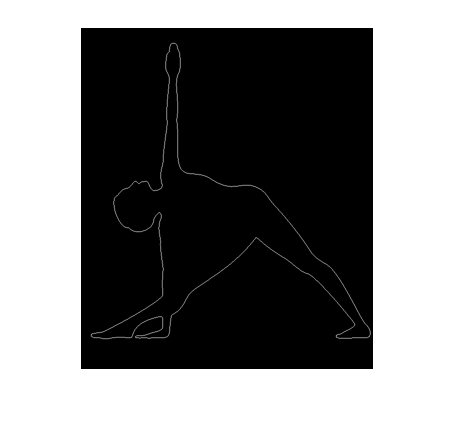

Contents
close all;
clc;clear all;
Learning the images
img1=imread('y1.jpg');
img1 = double(im2bw(img1,0.5));
label1 = get_label(img1,0);
img2=imread('y2.jpg');
img2 = double(im2bw(img2,0.5));
label2 = get_label(img2,0);
img3=imread('y3.jpg');
img3 = double(im2bw(img3,0.5));
label3 = get_label(img3,0);
img4=imread('y4.jpg');
img4 = double(im2bw(img4,0.5));
label4 = get_label(img4,0);
Scanning the test image
img_test=imread('y4.jpg');
img_test = double(im2bw(img_test,0.5));
label_test = get_label(img_test,1);
Warning: Image is too big to fit on screen; displaying at 67%

Classifying the test image
t1=isequaln(label1,label_test);
t2=isequaln(label2,label_test);
t3=isequaln(label3,label_test);
t4=isequaln(label4,label_test);
if(t1==1)
fprintf('The Given Asana is Ustrasana \n')
end
if(t2==1)
fprintf('The Given Asana is veerbhadrasan\n')
end
if(t3==1)
fprintf('The Given Asana is vrikhsasana \n')
end
if(t4==1)
fprintf('The Given Asana is trikonasana \n')
end
The Given Asana is trikonasana